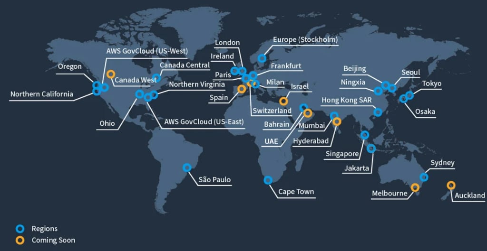
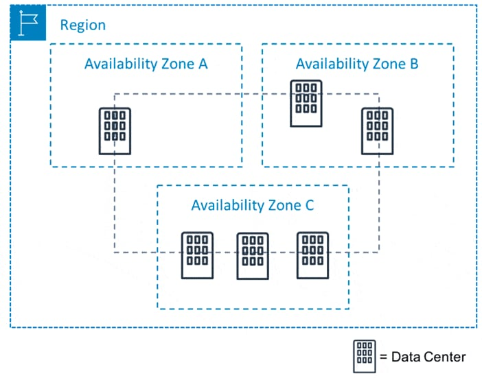
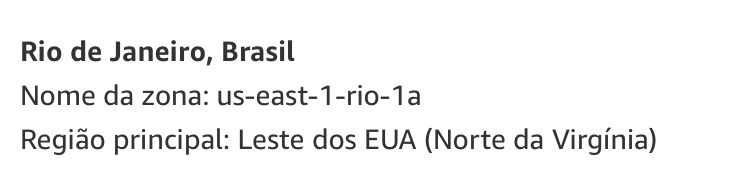

Este artigo aborda a Infraestrutura Global da AWS, que é uma área tecnológica chave
abordada no blueprint do exame Cloud Practitioner. A infraestrutura da AWS é construída em
torno de Regiões e Zonas de Disponibilidade (AZs).
Uma Região da AWS é uma localização física no
mundo onde a AWS possui várias AZs.
AZs consistem em um ou mais data centers discretos, cada um com energia redundante, rede e conectividade,
alojados em instalações separadas.
Cada região é completamente independente. Cada Zona de Disponibilidade é isolada, mas
as Zonas de Disponibilidade em uma região estão conectadas por links de baixa latência.
Regiões

- Uma região é uma área geográfica.
- Cada região consiste em 3 ou mais zonas de disponibilidade.
- Cada Região da Amazon é projetada para ser completamente isolada das outras Regiões
da Amazon.
- Cada Região da AWS possui várias Zonas de Disponibilidade e data centers.
- Você pode replicar dados dentro de uma região e entre regiões usando conexões
privadas ou públicas na Internet.
- Você mantém controle completo e propriedade sobre a região na qual seus dados
estão fisicamente localizados, facilitando o atendimento aos requisitos regionais de conformidade e
residência de dados.
- Observe que há uma taxa para transferência de dados entre regiões.
- Ao iniciar uma instância EC2, você deve selecionar uma AMI na mesma região. Se a AMI
estiver em outra região, você pode copiar a AMI para a região que está usando.
Regiões e Pontos de Extremidade:
- Ao trabalhar com uma instância usando a interface de linha de comando ou ações da
API, você deve especificar o ponto de extremidade regional.
- Para reduzir a latência de dados em suas aplicações, a maioria dos Serviços
da Web da Amazon oferece um ponto de extremidade regional para fazer suas solicitações.
- Um ponto de extremidade é uma URL que é o ponto de entrada para um serviço da web.
- Por exemplo, https://dynamodb.us-west-2.amazonaws.com é um ponto de entrada para o
serviço Amazon DynamoDB.
Zonas de Disponibilidade

Zonas de Disponibilidade são fisicamente separadas e isoladas entre si.
- As Zonas de Disponibilidade abrangem um ou mais data centers e têm conexões de rede
diretas, de baixa latência, alta largura de banda e redundantes entre si.
- Cada Zona de Disponibilidade é projetada como uma zona de falha independente.
- Ao lançar uma instância, você pode selecionar uma Zona de Disponibilidade ou permitir
que a AWS escolha uma para você.
- Se distribuir suas instâncias EC2 em várias Zonas de Disponibilidade e uma instância
falhar, você pode projetar sua aplicação para que uma instância em outra Zona de
Disponibilidade possa lidar com as solicitações.
- Você também pode usar endereços IP elásticos para mascarar a falha de uma
instância em uma Zona de Disponibilidade, remapeando rapidamente o endereço para uma
instância em outra Zona de Disponibilidade.
- Uma Zona de Disponibilidade é representada por um código de região seguido por um
identificador de letra; por exemplo, us-east-1a.
- Para garantir que os recursos sejam distribuídos entre as Zonas de Disponibilidade de uma
região, a AWS mapeia independentemente as Zonas de Disponibilidade para nomes de cada conta da AWS.
- Por exemplo, a Zona de Disponibilidade us-east-1a para sua conta da AWS pode não ser a mesma
localização que us-east-1a para outra conta da AWS.
- Para coordenar as Zonas de Disponibilidade entre contas, é necessário usar o ID da Zona de
Disponibilidade, que é um identificador único e consistente para uma Zona de
Disponibilidade.
- As Zonas de Disponibilidade são fisicamente separadas dentro de uma região metropolitana
típica e estão em áreas de risco de inundação mais baixo.
- As Zonas de Disponibilidade usam instalações discretas de UPS e geração de
backup no local e são alimentadas por meio de redes diferentes de instalações
independentes.
- Todas as Zonas de Disponibilidade estão conectadas de forma redundante a vários provedores
de trânsito de nível 1.
Zonas Locais
Vamos entender Zonas Locais, através deste exemplo no Rio de Janeiro, com o prefixo us-east-1:

Este não é uma nova Região na América do Sul. Se fosse o caso,
teríamos o prefixo sa-east-2, e não teríamos o nome "rio".
A "us-east-1-rio-1a" é uma Zona Local da região de Virgínia, que permitir
ter uma subnet no datacenter do Rio de Janeiro, funcionando em uma VPC da Virgínia (us-east-1).
A experiência de subir um Amazon EC2 no Rio de Janeiro, em uma VPC da Virgínia, seria similar
à de subir o Amazon EC2 em uma AZ específica da Virgínia. A grande vantagem é de
conseguir oferecer baixa latência no Brasil, sem precisar mover toda a sua aplicação
para sa-east-1 (Região South America em São Paulo), nem fazer VPC peering.
Outros detalhes sobre as Zonas Locais:
- As Zonas Locais da AWS colocam computação, armazenamento, banco
de dados e outros serviços selecionados da AWS mais próximos dos usuários finais.
- Com as Zonas Locais da AWS, você pode executar facilmente aplicativos altamente exigentes que
exigem latências de um único dígito de milissegundos para seus usuários finais.
- Cada localização das Zonas Locais da AWS é uma extensão de uma Região
da AWS, onde você pode executar aplicativos sensíveis à latência usando
serviços da AWS, como Amazon Elastic Compute Cloud, Amazon Virtual Private Cloud, Amazon Elastic
Block Store, Amazon File Storage e Amazon Elastic Load Balancing em proximidade geográfica aos
usuários finais.
- As Zonas Locais da AWS fornecem uma conexão segura de alta largura de banda entre cargas de
trabalho locais e aquelas em execução na Região da AWS, permitindo que você se
conecte perfeitamente à gama completa de serviços na região por meio das mesmas APIs
e conjuntos de ferramentas.
Locais de Borda e Caches de Borda Regionais
- Locais de Borda são pontos finais de Rede de Distribuição de Conteúdo (CDN)
para o CloudFront.
- Existem muitos mais locais de borda do que regiões.
- Atualmente, existem mais de 200 locais de borda.
- Os Caches de Borda Regionais ficam entre os servidores de origem do CloudFront e os Locais de Borda.
- Um Cache de Borda Regional tem uma largura de cache maior do que cada um dos Locais de Borda
individuais.
AWS Wavelength
- A AWS Wavelength permite que os desenvolvedores criem aplicativos que oferecem latências de um
único dígito de milissegundos para dispositivos móveis e usuários finais.
- Os desenvolvedores da AWS podem implantar seus aplicativos em Zonas Wavelength,
implantações de infraestrutura da AWS que incorporam serviços de
computação e armazenamento da AWS nos data centers dos provedores de
telecomunicações na borda das redes 5G e acessam perfeitamente a amplitude de
serviços da AWS na região.
- A AWS Wavelength leva os serviços da AWS até a borda da rede 5G, minimizando a
latência para se conectar a um aplicativo a partir de um dispositivo móvel.
AWS Outposts
- O AWS Outposts traz serviços nativos da AWS, infraestrutura e modelos
operacionais para virtualmente qualquer data center, espaço de co-locação ou
instalação no local.
- Você pode usar as mesmas APIs, ferramentas e infraestrutura da AWS em ambientes locais e na nuvem
AWS para oferecer uma experiência híbrida verdadeiramente consistente.
- O AWS Outposts é projetado para ambientes conectados e pode ser usado para dar suporte a cargas
de trabalho que precisam permanecer no local devido a baixa latência ou necessidades de
processamento local de dados.